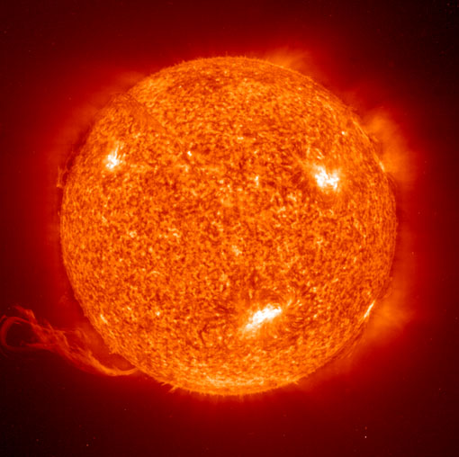
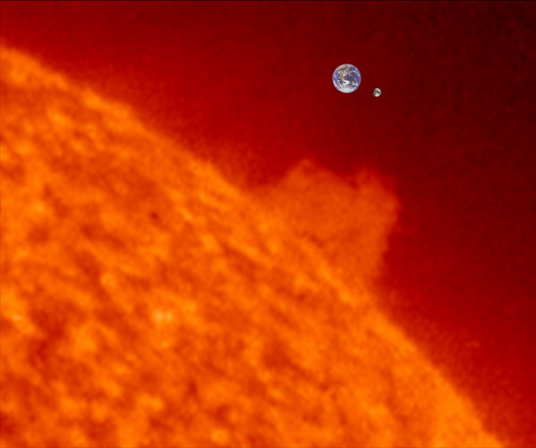
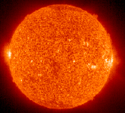
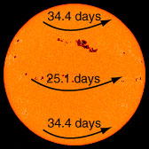
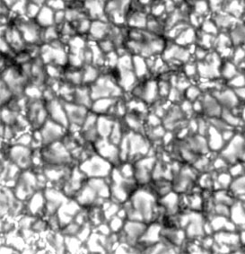

Sun

NASA image
| Mass (Earth=1) | 332,800 |
| Mean diameter (106 m) | 1392 |
| Rotation period | 26-37 d |
| Mean distance to Earth, 106 km | 149 |
| Density (water=1) | 1.41 |
| Surface gravity m/s2 | 274 |
|
Earth's Sun is a medium-sized star which lies on the main sequence with 90% of the known stars. It has a effective surface temperature is 5780 K, putting it in spectral class G2. Its mass is 1.989 x 1030 kg and its mean radius is
6.96 x 108 meters. The mass of the sun is over 99.8% of the mass of the entire known solar system, leading de Pater and Lissauer to refer lightly to the solar system as "the Sun plus some debris".
Another interesting item of perspective is that "95% of all stars are less massive than the sun"(Ward & Brownlee).
The sun radiates energy at the rate of 3.85 x1026 watts. Just outside the earth's atmosphere solar energy is received, assuming normal incidence, at the rate of 1340 watts per square meter.
|
The orbit of Earth ranges from 1.47 to 1.52 x 1011 meters from the Sun. The average light travel time to the earth is 8.3 minutes.
The radius of the sun at 696,000 km is 109 times the Earth's radius. Its surface gravity is 274 m/s2 or 28.0 times that of the Earth. Its mean density is 1410 kg/m3 or 0.255 times the mean density of Earth.

|
 |
The Sun's diameter of 1,392,000 km is 109 times the Earth's equatorial diameter of 12,756 km. The distance to the Earth from the sun at 149,000,000 km = 1 AU is 107 times the diameter of the Sun and 388 times the Earth-Moon distance. The Earth-Moon distance is not shown to scale in the above composite. The diameter of the Sun is 3.6 times the Earth-Moon distance. Above, the Earth and Moon are scaled relative to an image of the Sun made by the SOHO satellite on January 12, 2007. |
The composition of the sun is 71% hydrogen, 27.1% helium and less than 2% of all other elements.
The center temperature is modeled to be 15.5 million K. The Sun is fueled by the proton cycle of nuclear fusion.
Escape velocity = 618 km/s
|

|
Being a gaseous body, the Sun does not have a single period of rotation like a rigid body. The sunspots provide a convenient reference for the measurement of the rotation period at different latitudes. The period of rotation averages 25.4 days, varying from 34.4 days at the poles to
25.1 days at the equator (Chaisson). Its axis is tilted 7.25° relative to the ecliptic.
|
The visible surface of the Sun (the photosphere) has a granular appearance with a typical dimension of a granule being 1000 kilometers. The image at right is from the NASA Solar Physics website and is credited to G. Scharmer and the Swedish Vacuum Solar Telescope. The granules are described as convection cells which transport heat from the interior of the Sun to the surface. | 
|
The Sun's apparent magnitude is -26.8 and its absolute magnitude is +4.8 . Its greatest angular diameter as seen from the Earth is 32.5' .
The sun is 7.7 kpc or 25,000 light years from the center of the galaxy and orbits the galaxy in about 200 million years. This corresponds to an orbital velocity of 230 km/s.
|
Index
Solar System Illustration
Solar System Concepts
Sun Concepts
References
Chaisson & McMillan
Ch 16
de Pater and Lissauer
Ch 1 |